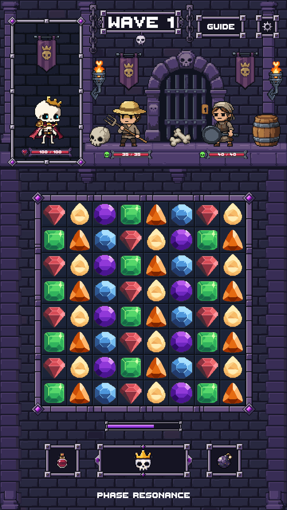
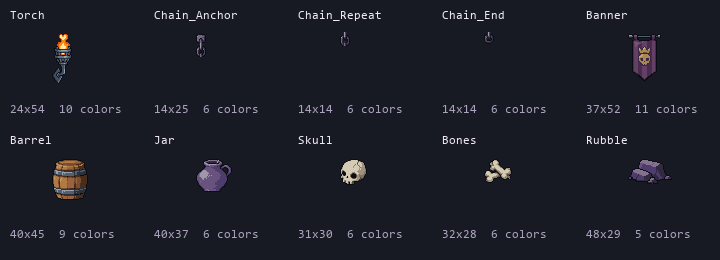
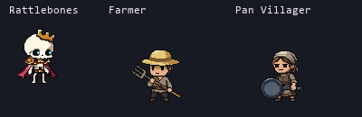

Approved modular art combined in an isolated Unity scene. No artwork edits, new generation, gameplay integration or merge.
Verification report · Exact source ledger · Approved Stage 04 props · Approved Stage 03 UI

Rattlebones, Farmer and Pan are static approved reference sprites. Health and resonance values are demonstration values; this scene has no gameplay or input owner.
The approved top study is reused at 2×. The board contains 64 native 64×64 cells and unchanged gems at 1×. Its approved corners, rails and connectors fit around the grid at 2×, matching the surrounding UI. Lower HUD and scenery also use 2×. Every source pixel remains an exact whole-pixel block.
The board recess overfills behind a mask, covering the space between frame and grid without exposing wall fragments. The portrait's original clipped recess is preserved. Extended wall tiles and complete edge masonry fill the lower scene.
Eight actual Unity captures cover the four views at both resolutions. Pixel comparisons confirm exact 2× replication and unchanged approved top/grid rendering. Unity layout checks and the repository validator passed. See the report for preserved-file counts and test scope.
Native prop catalog

Actual golden references at 1×

Stage 05 is complete for visual review. The dedicated branch and PR remain unmerged.